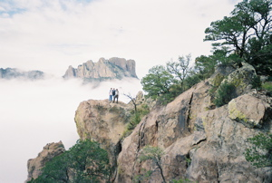

It’s time for us to start visualizing the future we desire. What would a sustainable world look like, and how do we get there? One way to think about it is to consider that we have three tall mountains to climb.
Conservation is the first - if smallest - mountain. We need to forestall the effects of global warming as much as possible. Right now, we’re on the lower slopes of this first mountain.
The next climb will be longer and steeper - population control is perfectly unavoidable. We must choose to stabilize human population, or we’ll make more of a mess of our habitat and then nature will exert the control we abdicated.
To slow our rapid population growth won’t require Draconian measures. Consider what would happen if the international moral consensus were that each human being should reproduce himself or herself once - two children per couple? That’s all it would take for populations to begin slowly shrinking. It’s a simplistic solution, but the ultimate solutions are often the simplest. We’ll have to negotiate some difficult routes through political conflicts to reach the top of this mountain.
That leaves the third and tallest mountain, economic reform. As our economies are now structured, we depend on population growth to support economic growth. Imagine a world in which demand for all the fundamental human necessities - food, shelter, etc. - were shrinking every year. To sustain our population at lower, healthier levels, we’ll have to invent a human economy that can maintain prosperity without growth. To do that, we’ll need brand new economic tools.
We need new systems in which no one is placed at an unfair disadvantage. That doesn’t mean turning to socialism, communism or any other obsolete social system. Instead, we need something new that rewards human innovation without requiring human expansion. Simply put, our new economic systems will require unprecedented cooperation across class, cultural and political barriers.
We have the tools we need to slow climate change and reduce the human population. But the economic tools we’ll need to secure our societies during a population reduction have yet to be invented.
Can we create economic tools that share the benefits of a healthy planet with all the planet’s human residents? Maybe not, but we’ll need to come pretty close to that if we’re to convince our global neighbors to join us to create a sustainable, healthy habitat for everyone.
If we are to cooperate, as a species, in forming a positive vision for our future, then the disenfranchised must be enfranchised. If we are to form the global consensus, we will need to support these sea changes in human attitudes and culture. Then our first task will be to begin the ascent of the three mountains. We face global problems whose solutions must be a new global consensus. We must visualize - as individuals and as a species - successful outcomes for all concerned.
(To share your thoughts on these issues, post a comment below.)
|
 BRYAN WELCH Conservation. Population. Economic reform. It’s time for us to visualize the future we desire. To get there, we’ll have to tackle these three significant issues together. |
|
|